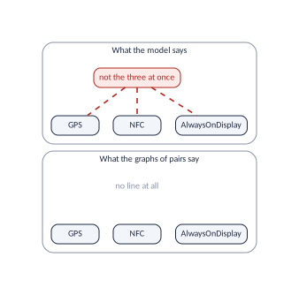

Every answer of variplex rests on the graphs, and the graphs hold relationships between two features. This vignette shows what that means: first on one example, with every function at once; then measured, as the share of the configurations allowed by the graphs that are valid (their representativeness); then function by function. The second half explains where the limits come from: rules that tie three or more features, and, for UVL models, numbers and texts that a logic formula cannot hold. It ends with the proofs that what the graphs say is true, and that about one or two features they say everything.
band <- vp_generate(
vp_example("miband3_realized.uvl"),
or_graph = TRUE,
representativeness = TRUE
)
battery <- vp_generate(
vp_example("miband3_battery.uvl"),
or_graph = TRUE,
representativeness = TRUE
)
# the 24 valid bands, one per row
products <- read.csv(vp_example("miband3_products.csv"))representativeness = TRUE needs the model counter GANAK
(see Measuring your own model).
One rule, three features, and every function
Add to the Mi Band 3 a battery rule: the battery cannot
power NFC, the heart-rate sensor and the touch screen at once. The
example miband3_battery.uvl is the band with this one more
line:
!(NFC & HeartRateSensor & TouchScreen)Every pair of the three is still possible, so no relationship between two features changes. Ask the functions of the package:
vp_compare(band, battery) |> select(graph, gained, lost, jaccard)
#> # A tibble: 3 x 4
#> graph gained lost jaccard
#> <chr> <int> <int> <dbl>
#> 1 requires 0 0 1
#> 2 excludes 0 0 1
#> 3 atleastone 0 0 1
identical(vp_feature_table(band), vp_feature_table(battery))
#> [1] TRUE
identical(
vp_summary(band) |> select(-model),
vp_summary(battery) |> select(-model)
)
#> [1] FALSEFor every function the two models are the same. Yet the battery rule removed 4 of the 24 products:
nrow(products)
#> [1] 24
nrow(read.csv(vp_example("miband3_battery_products.csv")))
#> [1] 20
vp_can_go_together(battery, c("TouchScreen", "HeartRateSensor", "NFC"))
#> # A tibble: 1 x 3
#> wish possible reasons
#> <chr> <lgl> <chr>
#> 1 TouchScreen, HeartRateSensor, NFC TRUE ""The last answer is wrong: no band of the new model has the three
features, and vp_can_go_together() says TRUE.
It is the one kind of mistake the functions make: they never call
impossible what is possible, but they can call possible what a rule over
three or more features forbids. How
representative are the graphs? measures how often that happens in
real models; for wish lists of a few features, rarely.
How much the graphs leave out: representativeness
The share of the configurations the graphs allow that are valid
Function: vp_representativeness()
The question. The graphs never forbid a valid configuration, but they allow some configurations that are not valid. How many?
Decide, for every feature that can vary, whether it is selected: that is a configuration of those features. The graphs allow the configuration when it breaks none of their links: no arrow goes from a selected feature to one left out, no conflict joins two selected features, and no at-least-one line joins two features left out. Every valid configuration is allowed, because every link holds in every valid configuration. But some allowed configurations are not valid: they break a rule over three or more features. The representativeness of the graphs is the share of the configurations they allow that are valid: It is 1 (100 %) when the graphs say everything the model says about its features; the rest is what they leave out.
How it is measured. Counting either number by trying
every configuration is only possible for tiny models
(vp_count_graph_products(), below, does it up to 20
features). For real models variplex uses a model counter, GANAK, which
counts the solutions of a formula without listing them: run
vp_generate() with representativeness = TRUE,
as at the top of this vignette (GANAK must be installed; the argument
ganak gives its path).
It counts two formulas, which it keeps in the folder of the run:
__count_formula.cnf, the model, counted on the features of
the graphs only, and __count_graphs.cnf, the graphs written
as a formula (one clause per link). The two numbers and their ratio go
into __summary.json, and the model holds them:
vp_representativeness(band)
#> # A tibble: 1 x 5
#> vm_configurations graph_configurations share left_out note
#> <dbl> <dbl> <dbl> <dbl> <chr>
#> 1 24 42 0.571 0.429 ""
vp_representativeness(battery)
#> # A tibble: 1 x 5
#> vm_configurations graph_configurations share left_out note
#> <dbl> <dbl> <dbl> <dbl> <chr>
#> 1 20 42 0.476 0.524 ""
vp_count_graph_products(band) |> select(and_atleastone)
#> # A tibble: 1 x 1
#> and_atleastone
#> <int>
#> 1 42vm_configurations is the number of valid configurations
of the variability model, graph_configurations the number
of configurations that the graphs allow, share their ratio
and left_out the rest. The graphs of the Mi Band 3 allow 42
configurations, and 24 of them are valid bands: a representativeness of
57.1 %. The 18 that are not valid break rules over three features, such
as “a band with BLE has version 4.0 or 4.2”. For a model this small,
vp_count_graph_products() finds the same 42 by trying every
configuration: the two counts agree.
The one number that sees the battery rule. In One rule, three features, and every function,
every function of the vignettes gave the same answer for the band with
and without the battery rule, because no relationship between two
features changed. Representativeness does change: the graphs still allow
42 configurations, but the model now has 20 valid ones, so the share
falls to 47.6 %. It is the way to measure, for a model of any size, how
much its graphs leave out. vp_summary() reports it in the
column representativeness.
Whole configurations and wish lists. Representativeness is about whole configurations, where every feature is decided. A wish list decides only some features, and the graphs judge wish lists far better than whole configurations. Take the configuration of the band with a screen (and the OLED panel and the capacity button that come with it) and none of the other features. The graphs allow it: it breaks no link. It is not valid: a band with a screen has BLE, and a band with BLE needs version 4.0 or 4.2, a rule over three features, and this configuration has neither. Now take the wish list “a screen”. It does not say anything about the versions, so the missing version can be added, and the wish list can be built: the graphs, which say yes, are right. A rule over three features of the kind “one of these” can always be satisfied by the features a wish list leaves open; it only bites when every feature is decided. That is why, for the band, the graphs say yes to 519 wish lists and all of them can be built (100 %), while only 57.1 % of the whole configurations they allow are valid:
features <- vp_features(band) |> filter(status == "variable") |> pull(feature)
# all the 2047 wish lists of the band: every set of 1 to 11 features
wishes_all <- unlist(
lapply(1:11, function(k) combn(features, k, simplify = FALSE)),
recursive = FALSE
)
graph_yes <- vp_can_go_together(band, wishes_all)$possible
buildable <- vapply(
wishes_all, # some valid band has them all
function(w) any(rowSums(products[w]) == length(w)),
TRUE
)
c(
graphs_say_yes = sum(graph_yes),
and_can_be_built = sum(graph_yes & buildable)
)
#> graphs_say_yes and_can_be_built
#> 519 519Rules of the other kind, “not all of these”, do bite wish lists: with the battery rule, the wish list “NFC, heart-rate sensor and touch screen” is allowed by the graphs and cannot be built (One rule, three features, and every function). In real models measures wish lists on real models.
Why it matters. Representativeness tells how far every other answer of the vignettes can be trusted for whole products: a model whose graphs are 100 % representative is fully described by its pairs, and every question about it can be answered from the graphs alone; a model at 10 % needs a solver for every question about complete products.
Limits: what this cannot tell you
It is about whole configurations. As shown above, a low representativeness does not mean that the answers of
vp_can_go_together()about wish lists are often wrong: the rules of the kind “one of these” lower representativeness but not the answers for wish lists.It counts the Boolean formula: for a UVL model, the numbers, texts and cardinalities that the formula leaves out are left out of the count too (Features that are more than yes or no).
Counting is hard in general: GANAK is fast for most models, and can take long for the largest ones. If it cannot run,
vp_generate()writes the graphs anyway, records the reason, andvp_representativeness()returnsNAwith that reason innote.The counts can be huge (Linux has more configurations than atoms in the universe); R keeps about 15 digits of them, and the exact values are in
__summary.json.It is measured on the whole model:
vp_subset()does not carry it over to a part.
Counting by trying every configuration, on a small model
Function: vp_count_graph_products()
The question. Can representativeness be checked without GANAK?
For a small model, yes: try every selection of the features that can vary and count those that break no link, graph by graph:
vp_count_graph_products(band)
#> # A tibble: 1 x 4
#> selections respect_requires and_excludes and_atleastone
#> <dbl> <int> <int> <int>
#> 1 2048 120 48 42
nrow(products)
#> [1] 24
vp_count_graph_products(band, products = 24) |> select(bits_model, explained)
#> # A tibble: 1 x 2
#> bits_model explained
#> <dbl> <dbl>
#> 1 6.42 0.874Of the
selections, 120 respect the requires graph, 48 also the excludes graph,
and 42 all three graphs. The model itself has 24 valid products (the
file miband3_products.csv of the examples, found by trying
every combination of the formula). The difference, 18 selections, is
what the rules over three features forbid: a band with a screen and no
version of BLE, for instance. Given the number of products, the function
also says how much of the model the graphs explain, on a scale of yes/no
choices: the model takes away 6.4 of the 11 choices, and the graphs
alone 87 % of that.
Why it matters. It makes representativeness concrete on small models and teaching examples, where every number can be checked by hand, and shows how much each graph contributes to describing the products.
Limits: what this cannot tell you
Only for small models: it tries
selections, and refuses above 20 features. On a real model, use
vp_representativeness() (above).
The limits, operation by operation
The table repeats, in two questions, the boxes Limits of the vignettes. Is what the operation says true? And does it say everything?
| Operation | Is what it says true? | Does it say everything? |
|---|---|---|
Reading (vp_read,
vp_read_history) |
Yes. The files of variplex, as they are. | No. Relationships between two features only; for UVL, no numbers or texts; features matched across versions by name. |
Reading old graphs with
artificial = "drop"
|
No. Not always: a rule on names can drop a real option or keep a helper. | No. As above. |
Minimal form, expansion (vp_minimal,
vp_expand) |
Yes. The same information as the complete graphs. | No. As the complete graphs; and “what was written” only roughly. |
Part of a model (vp_subset) |
Yes. Exact (property P3, Three properties of the graphs). | No. As the graphs. |
Tree of a UVL file (vp_read_uvl_tree) |
Yes. The tree as written. | No. Attributes, cardinalities and imports are not read. |
Drawing (vp_plot) |
Yes. Every link drawn is in what was given. | No. Positions are the choice of the layout, not a measure. |
Measures of a feature
(vp_feature_table) |
Yes. Exact counts on the graphs. | No. A rule over three features adds nothing to them. |
Lists of a feature (vp_required_by,
…) |
Yes. | Yes for relationships between two features; no for rules over three. |
| Genuine hubs, warning zone | Yes, for the threshold chosen. | No. They depend on the threshold, and on the requires graph. |
| Atomic sets | Yes. | Yes. Every group of features always selected together. |
| Skeleton, levels, depth, width, chains | Yes. Exact on the requires graph. | No. The skeleton is not the list of constraints; rules over three features count only through the arrows they imply. |
| Longest chain of decisions | Yes. Each step forces the next. | No. Decisions forced only by two decisions together are not seen. |
Largest free set
(vp_largest_free_set) |
Yes, every two of its features are free; the largest one up to 60 features, a large one above. | No. Free in pairs is not free together (Width and chains). |
| Foundations, leaves | Yes. | No. A rule over three features can still lean on a leaf. |
| Up-set, down-set, common requirements | Yes. | No. Through rules over three features, two selections together can force more. |
| Rebuilt feature tree | No. A proposal: one of several possible trees. | No. No groups, no abstract features. |
| False-optional features | Yes. | Yes when the parent is in the graphs; no when it is abstract. |
| Tree agreement, redundant constraints | Yes, for chains of requirements. | No. Redundancy through rules over three features is not seen; a candidate needs a solver to confirm. |
Whole-model numbers (vp_summary) |
Yes. Exact on the graphs. | No. They describe the graphs, not the model. |
Consistency checks (vp_check) |
Yes. | No. The files against each other, not against the model. |
| Degree distribution, Gini | Yes. Exact on the graphs. | No. How concentrated, not which features nor whether it is good; the complete graph has long tails by construction. |
| Primitive conflicts | Yes. | No. Whether one was written or follows from a longer rule needs the model. |
Explanations (vp_explain_*) |
Yes. Every step is a true relationship. | No. Links of the graphs, not constraints of the model. |
| Groups of alternatives, colouring, largest compatible set | Yes. The groups are true; the largest set is a true ceiling. | No. “At least one” groups are not in the graphs; the colouring and, for large models, the largest set are not always the best. |
| Twins | Yes, for the graphs. | No. A rule over three features can tell twins apart. |
| Candidate groups, conflict cover | Yes. Every group is “at most one”. | No. “Exactly one” groups are not seen; the cover is small, not always the smallest. |
| Opposites, primitive at-least-one lines, requirements from conflicts | Yes. | Yes for pairs, with the at-least-one graph. |
Two features (vp_pair) |
Yes. | Yes, with the at-least-one graph: exact. |
Wish lists, partial configurations: a
FALSE
|
Yes. Always right. | No. Misses what only a rule over three features forbids. |
Wish lists, partial configurations: a
TRUE
|
No. A rule over three features can forbid it (One rule, three features, and every function). |
Yes. Every possible list gets a
TRUE. |
| Consequences of decisions | Yes. | No. Decisions together can force more than each alone. |
Kernel (vp_kernel) |
Yes for its “no”; its “yes” can be wrong. | No. What follows from leaving features out is not in it. |
Safe order (vp_rounds) |
Yes, for requirements between two features. | No. A conflict within a round, or a rule over three features, can still make a later answer impossible. |
Modal implication graph (vp_mig) |
Yes. | No. Implications between two decisions only: the strong arrows of a MIG, never the weak ones. |
| Independent parts, cut features | Yes, for relationships between two features. | No. Rules over three features can tie parts together. |
Links between teams, team summaries
(vp_team_links, vp_teams) |
Yes. Each link is a true interference. | No. Two teams can interfere through a rule over three features with no link between them. |
| Moving features between teams | Yes, the counts. | No. A candidate for a person: who knows a feature matters more. |
| A split proposed by the links | Yes, the counts. | No. It knows links, not people; it depends on the seed. |
Order of the teams (vp_team_order) |
Yes, for requirements between two features. | No. Conflicts need agreement in any order; rules over three features can still undo an earlier decision. |
Decisions that cut the model
(vp_split_after, vp_splitting_decisions) |
Yes, for relationships between two features. | No. Rules over three features can tie the parts left; only single decisions are searched. |
| Combinations to cover | Yes. | Yes, with the at-least-one graph; an upper limit without it. |
| Coverage of a sample | Yes. | Yes for combinations of one or two features. |
| Sample violations | Yes. Each one breaks a true relationship. | No. A configuration can be invalid and break no link. |
| Lower bound on the sample size | Yes. No covering sample is smaller. | No. The true minimum can be larger. |
| Triangles, communities, robustness, coreness | Yes, on the graphs (communities depend on the seed). | No. Patterns of pairs only. |
| Power law, baseline | Statistical answers, with a margin of error. | No. They depend on the test and on the randomisation; the baseline covers dependencies only. |
| Features that look alike | Yes, the similarities. | No. They raise questions; only whoever maintains the model knows the answer. |
| Comparing versions | Yes. What it reports did change. | No. Invisible: changes that touch only rules over three features, and renames. |
Drawing changes (vp_plot_compare) |
Yes, but a “lost” arrow of the minimal form can be one that became implied. | No. As comparing versions. |
| Ripple | Yes, for written changes as the minimal form approximates them. | No. Changes of rules over three features ripple invisibly. |
Interaction changes
(vp_interaction_changes) |
Yes. Exact for two kept features (property P3). | Yes for pairs of kept features; no for features that changed state, or for rules over three. |
| Rename candidates | No. Candidates for a person to confirm. | No. A rename with changed links can be missed; a feature with no link to the kept ones cannot be matched. |
Sizes, changes, shape over time
(vp_history_apply) |
Yes, on the graphs of each version. | No. Each measure keeps its own limits; features added or removed can look like a trend. |
| Growth laws | Yes, the fitted line. | No. A power law is assumed; three points give a slope, not a trustworthy one. |
| Type of each step | No. Only “arbitrary edit” is certain; the others are possible. | No. Necessary conditions only. |
| Hubs, disruptions | Yes, on the graphs of the history. | No. Judged against the same history; the threshold is a convention. |
| Version distances, eras | Yes, on the kept features of each pair. | No. Versions sharing few features look alike; the number of eras is a choice. |
| Communities over time | Yes, next to two runs on one version. | No. The randomness of the algorithm can be as large as the change. |
| Attachment, churn, co-change | Yes, on the graphs of the history. | No. Changes of rules over three features count for nothing; a co-change is a candidate, not a dependency. |
| Link lifetimes, life cycle | Yes, on the graphs of the history. | No. Few cases in a calm history; all steps pooled. |
| Flips | No. Candidates: a rename looks like a flip. | No. As the states of the features. |
| Predictions | Estimates, with their error measured on later versions. | No. The causes of change are mostly outside the graphs. |
Representativeness
(vp_representativeness) |
Yes. Exact counts by GANAK. | Yes for whole configurations of the formula; it says nothing about wish lists, nor about what the formula leaves out of a UVL model. |
Counting by trying every configuration
(vp_count_graph_products) |
Yes. Exact. | Yes, up to 20 features. |
What a high measure means, and what a low one does not
The measures of Measuring each feature to Patterns and statistics rank features: by how many features require them, by how many chains pass through them, by how much selecting them decides. How far can a ranking be trusted?
A high value is real. Every arrow counted by
required_by is a relationship that holds in every valid
configuration. If 1,764 options of Linux require NET, then
1,764 options cannot be selected without it: changing NET
affects them all, whatever else the model says. The same holds for
betweenness (each chain it counts is made of true
requirements) and for decision_power (each feature it
counts is truly decided). So a feature that ranks high is important. (It
may borrow its importance from another one: Genuine hubs.)
A low value is not proof of unimportance. The graphs hold relationships between two features. A feature can be important through rules over three or more features, and those leave no arrow. The band has an example:
vp_feature_table(band) |>
filter(feature %in% c("BLEv40", "BLEv42")) |>
select(feature, required_by, betweenness)
#> # A tibble: 2 x 3
#> feature required_by betweenness
#> <chr> <int> <dbl>
#> 1 BLEv40 1 1
#> 2 BLEv42 0 0
with_screen <- products |> filter(Screen == 1) # the bands with a screen
mean(with_screen$BLEv40 == 1 | with_screen$BLEv42 == 1)
#> [1] 1
# 1: every one of them has one of the two versionsBLEv42 is required by no feature, and BLEv40 by
one. Judged one by one, they look marginal. Yet every band with a screen
(18 of the 24) has one of the two: the rule “a band with BLE has version
4.0 or 4.2” makes the pair indispensable, and no arrow points to either.
In Linux every depends on A || B does the same:
A and B each look unrequired, while together
they are needed. The same blind spot affects every measure: a chain that
runs through such a rule is no chain of the graphs, so it adds to
nobody’s betweenness.
So use the measures to find important features, never to declare a feature unimportant. Before deciding that a feature with low values can be removed or ignored, look for it in the rules of the model that tie three or more features; representativeness (How much the graphs leave out: representativeness) says how much of the model such rules hold.
Everything the functions of the vignettes compute from the graphs is true of the graphs, and every relationship in the graphs is true of the model. What is missing is the rules over three or more features. When an answer matters (a “yes” to a long wish list, “nothing changed” between two versions), check it against the model with a solver.
What the graphs cannot see
The rest of this vignette is about the most important thing to know about the results of variplex: everything they say is true, but they do not say everything. Two things are missing from them. The graphs hold relationships between two features, and a model can have rules that tie three or more features at once (A rule that no pair can show). And for a UVL model, the formula itself can leave out part of the model: its numbers and texts, and how many copies a feature with a cardinality has (Features that are more than yes or no). Why it is true: a proof proves all of this.
A rule that no pair can show
Here is the smallest example. A band has three optional features and one rule: the battery cannot power the three at once.
tiny_file <- vp_example("tiny_band.uvl")
cat(readLines(tiny_file), sep = "\n")
#> features
#> TinyBand {abstract true}
#> optional
#> GPS
#> NFC
#> AlwaysOnDisplay
#>
#> constraints
#> !(GPS & NFC & AlwaysOnDisplay)| GPS | NFC | AlwaysOnDisplay | |
|---|---|---|---|
| yes | yes | yes | not valid |
| yes | yes | – | valid |
| yes | – | yes | valid |
| yes | – | – | valid |
| – | yes | yes | valid |
| – | yes | – | valid |
| – | – | yes | valid |
| – | – | – | valid |
Now look at the features two by two. GPS and NFC can go together; so can GPS and AlwaysOnDisplay, and NFC and AlwaysOnDisplay. No feature requires another, no two exclude each other, and none of the three is needed. There is no relationship between two features at all, and variplex says exactly that:
tiny <- vp_generate(tiny_file, or_graph = TRUE)
tiny
#> variplex model "tiny_band"
#> features: 3 variable (the nodes of the graphs), 0 core, 0 dead
#> requires: 0 arrows excludes: 0 lines
#> at least one: 0 lines
#> atomic sets: 0 (of two or more features)
vp_pair(tiny, "GPS", "NFC")
#> # A tibble: 4 x 5
#> combination a b possible ruled_out_by
#> <chr> <lgl> <lgl> <lgl> <chr>
#> 1 both TRUE TRUE TRUE ""
#> 2 only GPS TRUE FALSE TRUE ""
#> 3 only NFC FALSE TRUE TRUE ""
#> 4 neither FALSE FALSE TRUE ""
The rule is not lost: it is in the model, and every valid
configuration respects it. It is simply not a relationship between two
features, so no graph of pairs can hold it. Rules of this kind are
common: “a feature needs one of two others”
(A => B | C), “these three cannot go together”, and the
groups of a feature diagram, “at least one of these children”. Some
representations also keep such rules, like the modal implication graphs
used to propagate configuration decisions Krieter et al. (2018); the graphs of variplex
keep the plain meaning of an arrow instead.
What is always true, and what may be missing
The table goes through every result, for what is in the formula (Features that are more than yes or no is about what the formula leaves out).
| Result | Is what it says true? | Does it say everything? |
|---|---|---|
| Core and dead features | Yes. Each core feature is in every valid configuration, and each dead feature in none. | Yes. Every core and every dead feature is found. |
| The three graphs: requires, excludes, at least one | Yes. Every arrow and every line holds in every valid configuration. | No. They hold every relationship between two features, but the rules over three or more features are in none of them. |
| Atomic sets | Yes. The features of an atomic set are always selected together. | Yes. Every group of features that are always selected together is found. |
| Minimal form | Yes. It is the graphs without repetitions. |
No. It says what the graphs say
(vp_expand() gives them back), and no more. |
| Kernel: its boxes, arrows and red lines | Yes. Each arrow and each red line is a true relationship between boxes. | No. It keeps only what the graphs say about “can these go together?”. |
| Kernel: a “no” to a wish list | Yes. Two of the features, or two features that they bring along, exclude each other in every valid configuration. | No. It misses the wish lists that only a rule over three or more features forbids. |
| Kernel: a “yes” to a wish list | No. A rule over three or more features can still forbid the list (How representative are the graphs? measures how often). | Yes. Every wish list that can be built gets a “yes”. |
Explanations (vp_explain_conflict(),
vp_explain_requires()) |
Yes. Every step of a chain is a true relationship. | No. It answers with the links of the graphs, not with the rules of the model that made them. |
Comparing versions (vp_compare()) |
Yes. What it reports did change. | No. A change that only touches a rule over three or more features is invisible to it. |
Which variables are features
(__variables.csv), for a UVL model |
Yes. variplex translated the model itself and marked its helper variables. | Yes. Every variable is listed, with its class and the rule that decided (The two reports: what was decided, and how the run went). |
| Which variables are features, for a formula made by another tool | No. Not always: it is decided by rules on the names, which an unusual name can fool. | Yes. Every variable is listed, with its class and the rule that decided, so a wrong decision can be found. |
An example of the row of the explanations. In the Mi Band 3, BLEv42 requires HeartRateSensor, and the explanation is a single arrow:
vp_explain_requires(band, "BLEv42", "HeartRateSensor")
#> # A tibble: 1 x 5
#> route step from link to
#> <int> <int> <chr> <chr> <chr>
#> 1 1 1 BLEv42 requires HeartRateSensorNo constraint of the model says so. It follows from
BLE => HeartRateSensor | MovementFilter, a rule over
three features, together with the fact that the movement filter needs
BLE version 4.0. The graphs keep what the rule implies for pairs, and
only that.
The kernel: a “no” is final, a “yes” is a good guess
On the tiny band the kernel has a single class, “can always be added”, with the three features:
vp_kernel(tiny)
#> # A tibble: 3 x 4
#> class label feature trouble_free
#> <int> <chr> <chr> <lgl>
#> 1 1 GPS GPS TRUE
#> 2 1 GPS NFC TRUE
#> 3 1 GPS AlwaysOnDisplay TRUESo the kernel answers “yes” to the wish list “GPS, NFC and AlwaysOnDisplay”, which no valid configuration has.
The same happens on the Mi Band 3. Add the rule of the tiny band to it, now for NFC, the heart-rate sensor and the touch screen:
tail(readLines(vp_example("miband3_battery.uvl")), 1)
#> [1] "\t!(NFC & HeartRateSensor & TouchScreen)"
identical(vp_kernel(battery), vp_kernel(band))
#> [1] TRUEEvery pair of the three is still possible, so no relationship between two features changes, and the kernel of the new model is the kernel of the band: But the model has lost 4 of its 24 valid configurations, and the wish lists that can be built drop from 520 to 424. The kernel still says “yes” to 520: it is wrong 96 times. The smallest wrong answers are 4 wish lists of three features: BLEv42, ContactlessPayment, TouchScreen; BLEv42, NFC, TouchScreen; ContactlessPayment, HeartRateSensor, TouchScreen; HeartRateSensor, NFC, TouchScreen (contactless payment brings NFC along, and Bluetooth 4.2 brings the heart-rate sensor). Among them is the first wish list of The kernel: “can these go together?”, which was buildable before the battery rule.
Why is a “no” always right? The kernel says “no” when two of the
features you want, or two of the features they bring along, exclude each
other, and that holds in every valid configuration. A “yes” only means
that no two features stand in each other’s way; a rule over three or
more features can still forbid the whole list. That is why the help of
vp_kernel() and vp_can_go_together() says
so.
Comparisons cannot see it either
Compare the Mi Band 3 with the same band plus the battery rule:
vp_compare(band, battery)
#> # A tibble: 3 x 10
#> graph kept added removed old_links new_links gained lost jaccard spearman
#> <chr> <int> <int> <int> <int> <int> <int> <int> <dbl> <dbl>
#> 1 requires 11 0 0 21 21 0 0 1 1
#> 2 excludes 11 0 0 10 10 0 0 1 NA
#> 3 atleastone 11 0 0 3 3 0 0 1 NANo change at all, and Jaccard 1 everywhere, while the model lost 4 of its 24 products. A comparison of the graphs compares relationships between two features, and none of them changed.
How representative are the graphs?
The graphs can be wrong in one way only: they can let pass a combination of features that the model forbids. Every link they hold is true, so a combination that breaks one of them is impossible. How representative the graphs are is therefore one question: of the combinations that the graphs let pass, how many are really possible? It has two versions, for two kinds of combination: whole products, and wish lists.
Whole products
Choose, for every feature that can vary, whether a product has it. The graphs let the choice pass when it breaks none of their links: no arrow goes from a chosen feature to one left out, no red line joins two chosen features, and no green line joins two features left out. On the Mi Band 3, 42 choices pass, and 24 of them are valid configurations: 57 %. The smallest choice that passes and is not valid is a band with CapacityButton, OLED, Screen and none of the other features that can vary. It breaks no link, but it has a screen, so it has BLE (the abstract feature that the graphs leave out), and no BLE version, while the model says that a band with BLE has one of the versions BLEv40 and BLEv42: a rule over three features. (It also lacks the heart-rate sensor or the movement filter that constraint 2 asks of a band with BLE, another rule over three features.)
Wish lists
A wish list only says what a product must have, and the graphs let it pass when no red line joins two of its features: exactly the question of the kernel, which gives the same answers. For wish lists the Mi Band 3 is perfectly represented: every wish list that the graphs let pass can be built. The rule about the BLE versions does not matter for a wish list, because a band with BLE can always take one of the versions.
Both measures were taken for every model of the vignettes that is small enough to try every combination:
| Model | Features that vary | Whole products: let pass | valid | share | Wish lists: right “yes” |
|---|---|---|---|---|---|
| Mi Band 1 | 0 | 1 | 1 | 100 % | 100 % |
| Mi Band 1s | 1 | 2 | 2 | 100 % | 100 % |
| Mi Band 2 | 8 | 32 | 24 | 75 % | 100 % |
| Mi Band 3 | 11 | 42 | 24 | 57 % | 100 % |
| Mi Band 4 | 17 | 140 | 72 | 51 % | 100 % |
| Mi Band 6 | 21 | 42 | 22 | 52 % | 100 % |
| Mi Band 8 | 23 | 43 | 21 | 49 % | 100 % |
| Mi Band 3 with the battery rule | 11 | 42 | 20 | 48 % | 82 % |
| The tiny band (Section A rule that no pair can show) | 3 | 8 | 7 | 88 % | 88 % |
The graphs of every Mi Band answer wish lists perfectly, while about half of the whole products they let pass are not valid (49 % of them are, at worst). Rules like “a band with BLE has one of the versions” are common in feature models, because every group with an “or” or an “alternative” is one; they matter when a whole product is decided, and rarely when a wish list is. The battery rule is different: it forbids a wish list, so it lowers both measures.
Measuring your own model
For whole products the measure is a ratio of two counts, and the
option representativeness = TRUE computes it:
Counting the products of a model one by one is hopeless beyond a few
dozen features that vary, and a SAT solver, which answers “is there
one?”, does not help. The tool for it is a model counter, or
#SAT solver: it counts the solutions of a formula without listing them,
by splitting it into parts that share no variable and remembering the
parts it has already counted Sundermann et
al. (2021). variplex uses GANAK (https://github.com/meelgroup/ganak), an exact model
counter: in the Model Counting Competition 2024 it solved the most
formulas with exact counts in all four tracks, among them plain and
projected model counting (https://mccompetition.org/assets/files/2024/MC2024_awards.pdf).
It is a separate program: download it from the releases of its page
(there are programs for Linux, macOS and Windows) and put it on the
PATH, or give its path with the argument ganak
of vp_generate().
variplex gives GANAK two formulas, and keeps them with the other files of the run:
__count_formula.cnf, the formula of the model, headed by a linec p showwith the variables of the features in the graphs. GANAK then counts the choices of those features that some configuration has, and not the configurations themselves: a configuration also sets the abstract features and the helper variables of the translation, which are not in the graphs. This is a projected count.__count_graphs.cnf, the graphs written as a formula: one variable for each feature of the graphs, and one clause for each link. An arrow is the clause , a red line — is , and a green line is (Why it is true: a proof). Its solutions are the choices that the graphs let pass, which is why the option also computes the third graph.
On the Mi Band 3 with the battery rule:
vp_representativeness(battery)
#> # A tibble: 1 x 5
#> vm_configurations graph_configurations share left_out note
#> <dbl> <dbl> <dbl> <dbl> <chr>
#> 1 20 42 0.476 0.524 ""
str(battery$summary$representativeness)
#> List of 5
#> $ counter : chr "/home/rheradio/s4vm_work/tools/ganak/ganak"
#> $ configurations: chr "20"
#> $ graph_choices : chr "42"
#> $ share : num 0.476
#> $ left_out : num 0.52420 of the 42 choices that the graphs let pass are products: 47.6 %,
the share of the table above, found this time without trying a single
combination. The summary keeps the two counts as text, because on a
large model they have more digits than any integer of a program can
hold, and adds left_out, the share that the graphs leave
out. If GANAK cannot count, the graphs are still written, the summary
says why, and vp_representativeness() gives the reason in
note.
Counting works for large models too: Each count took less than a second here, but counting is harder than the questions that make the graphs, and a formula of thousands of variables can take GANAK much longer.
| Model | let pass | products | share |
|---|---|---|---|
| Mi Band 3 | 42 | 24 | 57.1 % |
| Mi Band 3 with the battery rule | 42 | 20 | 47.6 % |
| uClibc | 1.08 × 1042 | 1.66 × 1040 | 1.5 % |
| BusyBox 1.18.0 | 1.99 × 10208 | 1.89 × 10207 | 9.5 % |
For uClibc, 1.5 % of the whole products that the graphs let pass are products, and for BusyBox 1.18.0, 9.5 %: for whole products, the graphs of a large model are a loose approximation. Wish lists are another matter, as the next section shows: the share of the wish lists that the graphs let pass and that can be built stays high, because a wish list leaves the other features free. To be sure about one wish list, ask the solver (How to be sure).
The graphs are fully representative of the wish lists of a model when every wish list that cannot be built contains two features that cannot go together, and of its whole products when every rule of the model can be written as relationships between two features. Measure them on your model before you trust a “yes” for a long wish list or for a whole product.
In real models
Is this a curiosity, or a daily problem? Two measurements on real models.
Most clauses are about two features. A formula is a list of clauses, and a clause with two literals is a relationship between two variables. In the 5,709 formulas of the dataset of Strong4VM, with 199,787,155 clauses in all, 60% of the clauses have two literals, and in 75% of the formulas more than half of them do (the table below). Formulas translated from feature models (TraVarT) are almost all pairs; formulas made by KConfigReader are not, because of the way it encodes Kconfig.
| Translator | Formulas | Clauses | 1 literal | 2 literals | 3 literals | 4 or more |
|---|---|---|---|---|---|---|
| KMax | 2,058 | 65,078,833 | 16 % | 62 % | 9 % | 13 % |
| KConfigReader | 1,340 | 69,144,889 | 5 % | 24 % | 39 % | 32 % |
| KconfigSampler | 5 | 14,178 | 10 % | 66 % | 25 % | 0 % |
| TraVarT | 2,306 | 65,549,255 | 0 % | 98 % | 1 % | 1 % |
| All | 5,709 | 199,787,155 | 7 % | 60 % | 17 % | 16 % |
So a formula is mostly a large web of pairs, plus some longer rules, which is why the graphs show most of what matters. But the share of pairs does not tell how often the graphs are wrong: one longer rule can be enough to fool them (the battery rule), and many longer rules can be harmless (KConfigReader). That needs the second measurement.
For wish lists, the graphs are rarely wrong, but they can be. For each of the seven Mi Bands, every wish list was checked against the valid configurations, up to 8,388,608 of them for the Mi Band 8: the graphs, and the kernel, were never wrong. On 10 large real models, 1,000 random wish lists that the graphs let pass were drawn for each size, and a SAT solver checked whether they can be built (wish lists of two features, the control, were never wrong). The table gives, for each size of wish list, how many of the 1,000 wish lists that the graphs let pass cannot be built:
| Model | Translator | Options | 3 | 5 | 10 | 20 | 50 |
|---|---|---|---|---|---|---|---|
| Linux x86 3.13 | KMax | 7,100 | 0 | 0 | 0 | 0 | 20 |
| Linux x86 2.6.24 | KMax | 3,612 | 0 | 0 | 1 | 5 | 21 |
| Linux x86 2.6.24 | KConfigReader | 3,579 | 0 | 0 | 0 | 0 | 2 |
| Linux S390 2.5.45 | KConfigReader | 425 | 0 | 0 | 0 | 0 | 0 |
| BusyBox 1.33.0 | KconfigSampler | 1,003 | 0 | 0 | 0 | 0 | 0 |
| Automotive01 | TraVarT | 2,199 | 0 | 0 | 0 | 3 | 17 |
| Automotive2 2.4 | TraVarT | 16,829 | 0 | 0 | 0 | 0 | 0 |
| BusyBox 1.18.0 | UVL | 819 | 0 | 0 | 0 | 0 | 0 |
| axTLS | UVL | 61 | 0 | 0 | 0 | 0 | 0 |
| uClibc | UVL | 238 | 1 | 3 | 17 | 111 | 429 |
In 9 of the 10 models the graphs were never wrong for wish lists of up to 5 features, wrong for at most 0.1% of those of 10, and for at most 2.1% of those of 50. uClibc is the exception: 0.1% of the wish lists of 3 features, 1.7% of those of 10 and 43% of those of 50. Its constraints are full of rules over many options. One of them says that USE_BX needs an ARM target or a Cortex-M processor; so USE_BX, the VAX target (which excludes the ARM target) and the ARM10T processor (which excludes both Cortex-M processors) pass every pair test, and cannot be built together.
The graphs and the kernel are a good approximation of the model: what they say is true, and they are rarely wrong when they let a wish list pass. But an approximation is all they are, and how good it is depends on the model, on the size of the question, and on whether it is about a wish list or a whole product.
How to be sure
When the answer matters, ask the solver. variplex itself can do it:
write the wish list as one more constraint of the model, and run it. If
no valid configuration has all the wished features, the model has no
product left, and vp_generate() stops with an error of
class variplex_void_model (A
model without any product):
tail(readLines(vp_example("miband3_battery_wish.uvl")), 2)
#> [1] "\t!(NFC & HeartRateSensor & TouchScreen)" "\tTouchScreen & HeartRateSensor & NFC"
e <- tryCatch(
vp_generate(vp_example("miband3_battery_wish.uvl")),
error = function(e) e
)
class(e)
#> [1] "variplex_void_model" "variplex_error" "error" "condition"
inherits(vp_generate(vp_example("miband3_wish.uvl")), "vp_model")
#> [1] TRUEThe first model is the Mi Band 3 with the battery rule: the wish list cannot be built. The second is the Mi Band 3 as it is: it can. The solver only knows what is in the formula: a constraint that variplex leaves out of a UVL model (What the formula leaves out: numbers and texts) is left out of this check too. For such a model, use a tool that understands numbers, such as an SMT solver.
Features that are more than yes or no
Up to here every feature was something that a product has or does not have. variplex works on a logic formula, whose variables are true or false, so that is all it can take from a model. UVL, the Universal Variability Language, now says much more. Its web page1 sorts what it can say into three language levels:
Boolean: the feature tree, the groups (also with a group cardinality, such as
[0..2]: from none to two of the children), and constraints between features (NFC => GPS).Arithmetic: attributes, numbers attached to a feature (
GPS {power 30}); constraints that compute with them (GPS.power + NFC.power < 50), also over all the selected features at once (sum(power) < 80, oravg); and feature cardinality, a feature that a product can have several times (Strap cardinality [1..2]: one strap or two).Type: features with a value,
Integer,RealorString(Integer BatteryCapacity), and constraints on those values, with functions such asfloor,ceilandlen, the length of a text.
Two more things fit in no level: a constraint can be written inside
the attributes of a feature
(Screen {constraint Screen => Touch}), and a model can
import the features of another model (imports). This
chapter tells what vp_generate() does with each of them,
what that means for every result, and what you can do about it.
What variplex does with each
Here is a band that uses them all:
cat(readLines(vp_example("uvl_tour.uvl")), sep = "\n")
#> features
#> Band {abstract true}
#> mandatory
#> Integer BatteryCapacity
#> Real Price
#> String Model
#> Strap cardinality [1..2]
#> optional
#> Screen {power 40, constraint Screen => Touch}
#> optional
#> Touch {power 5}
#> GPS {power 30}
#> NFC {power 10}
#>
#> constraints
#> NFC => GPS
#> sum(power) < 80
#> GPS.power + NFC.power < 50
#> BatteryCapacity > 100
#> floor(Price) < 100
#> len(Model) < 20And here is what vp_generate() says about it:
tour <- vp_generate(vp_example("uvl_tour.uvl"))
#> Warning: uvl_tour.uvl: line 17: constraint "sum(power) < 80"
#> was skipped: it could not be parsed (it likely contains unsupported constructs such as aggregate
#> functions, attribute access, or typed feature references)
#> Warning: uvl_tour.uvl: line 20: constraint "floor(Price) <
#> 100" was skipped: it could not be parsed (it likely contains unsupported constructs such as
#> aggregate functions, attribute access, or typed feature references)
#> Warning: uvl_tour.uvl: line 21: constraint "len(Model) < 20"
#> was skipped: it could not be parsed (it likely contains unsupported constructs such as aggregate
#> functions, attribute access, or typed feature references)
#> Warning: uvl_tour.uvl: line 18: constraint "GPS.power +
#> NFC.power < 50" was skipped: it is not purely Boolean (arithmetic or comparison)
#> Warning: uvl_tour.uvl: line 19: constraint "BatteryCapacity >
#> 100" was skipped: it is not purely Boolean (arithmetic or comparison)
#> Warning: uvl_tour.uvl: line 7: feature "Strap" has the
#> feature cardinality [1..2]: it is encoded as one feature, mandatory or optional as its group says;
#> the number of its copies, and what each copy has, are not represented.
#> Warning: uvl_tour.uvl: 3 feature(s) are declared Integer,
#> String or Real; they are encoded only by their presence, their values are not represented
#> (R-UVL-06).It names the 5 constraints that it leaves out, counts the 3 features with a value, and warns that Strap has a feature cardinality: it becomes one mandatory feature, and therefore a core feature. The constraint in the attributes of Screen is read like any other, so in the graphs the screen requires the touch layer. The table goes through every construct.
|:—————————————————|:—————————————–|:—————————————————————————————————————————————|:————————————————-|
| Construct | Example | What
variplex does | Does it tell you? | | Feature
tree, groups, constraints between features | NFC => GPS
| Translates them exactly. | — | | Group cardinality |
[0..2] | Translates it exactly. | — | | Attribute |
GPS {power 30} | Sets it aside: it is a number, not a
feature. | Through the constraints that use it (next rows). | |
Arithmetic on attributes | GPS.power + NFC.power < 50 |
Leaves the constraint out. | Yes, with its line. | | Aggregate |
sum(power) < 80 | Leaves the constraint out. | Yes, with
its line. | | Feature with a value |
Integer BatteryCapacity | Keeps the feature: whether a
product has it, not its value. | Yes, how many there are. | | Constraint
on a value | BatteryCapacity > 100,
floor(Price) < 100, len(Model) < 20 |
Leaves the constraint out. | Yes, with its line. | | Feature cardinality
| Strap cardinality [1..2] | Keeps one feature, mandatory
or optional as its group says; how many copies a product has, and what
each copy has, is not represented. | Yes, with its line. | | Constraint
written as an attribute |
Screen {constraint Screen => Touch} | Reads it like the
constraints of the section constraints: translates it when
it is Boolean, leaves it out when it is not. | Yes, when it leaves it
out. | | Imported model | imports sensors.Pack as S | Does
not read the imported features, and leaves out every constraint that
names one. | Yes, for each constraint. |
What the formula leaves out: numbers and texts
A logic formula cannot hold numbers or texts, so a constraint that computes with them is left out. Here is the tiny band of A rule that no pair can show again, its rule written this time with numbers, and with a battery whose capacity is a number:
cat(readLines(vp_example("numbers_band.uvl")), sep = "\n")
#> features
#> TinyBand {abstract true}
#> mandatory
#> Integer BatteryCapacity
#> optional
#> GPS {power 30}
#> NFC {power 10}
#> AlwaysOnDisplay {power 25}
#>
#> constraints
#> GPS.power + NFC.power + AlwaysOnDisplay.power < 60
#> BatteryCapacity > 100The constraint on the power says what the battery rule of A rule that no pair can show said: any two of the three features draw less than 60, and the three together draw 65. variplex warns about every constraint that it leaves out, and about every feature with a type:
numbers <- vp_generate(vp_example("numbers_band.uvl"))
#> Warning: numbers_band.uvl: line 11: constraint "GPS.power +
#> NFC.power + AlwaysOnDisplay.power < 60" was skipped: it is not purely Boolean (arithmetic or
#> comparison)
#> Warning: numbers_band.uvl: line 12: constraint
#> "BatteryCapacity > 100" was skipped: it is not purely Boolean (arithmetic or comparison)
#> Warning: numbers_band.uvl: 1 feature(s) are declared Integer,
#> String or Real; they are encoded only by their presence, their values are not represented
#> (R-UVL-06).
numbers
#> variplex model "numbers_band"
#> features: 3 variable (the nodes of the graphs), 1 core, 0 dead
#> requires: 0 arrows excludes: 0 lines
#> at least one: not computed (use vp_generate(or_graph = TRUE))
#> atomic sets: 0 (of two or more features)The rule is gone, and this time not only from the graphs: it is not
even in the formula, so the formula allows all eight combinations of the
three features. The summary counts what was left out, under
uvl, and strict_uvl = TRUE turns a constraint
left out into an error:
numbers$summary$uvl[c("skipped_constraints", "typed_features")]
#> $skipped_constraints
#> [1] 2
#>
#> $typed_features
#> [1] 1
e <- tryCatch(
suppressWarnings(vp_generate(
vp_example("numbers_band.uvl"),
strict_uvl = TRUE
)),
error = function(e) e
)
class(e)
#> [1] "variplex_strict_uvl" "variplex_error" "error" "condition"strict_uvl = TRUE stops for every constraint left out,
also one written as an attribute. It does not stop for a feature with a
value, nor for a feature cardinality: neither leaves a constraint out,
though both leave something unsaid.
Even two features
In What is always true, and what may be missing the graphs missed only rules over three or more features: every relationship between two features was found, and every core and dead feature. That was because the formula held the whole model. When the formula leaves something out, it allows more than the model does, and then even those can be missed. A band with a power budget:
cat(readLines(vp_example("power_band.uvl")), sep = "\n")
#> features
#> PowerBand {abstract true}
#> optional
#> Screen {power 40}
#> optional
#> AlwaysOnDisplay {power 25}
#> Projector {power 45}
#> GPS {power 30}
#> NFC {power 10}
#>
#> constraints
#> sum(power) < 80The screen with the always-on display and the GPS draws 95, over the budget of 80, and the screen with the projector draws 85. So in the model AlwaysOnDisplay and GPS exclude each other, and Projector is dead: no band can have it. The formula holds only the tree, which allows 20 configurations; with its budget, the model has 9. variplex sees the tree:
power <- vp_generate(vp_example("power_band.uvl"), or_graph = TRUE)
#> Warning: power_band.uvl: line 12: constraint "sum(power) <
#> 80" was skipped: it could not be parsed (it likely contains unsupported constructs such as
#> aggregate functions, attribute access, or typed feature references)
vp_links(power, "requires")
#> # A tibble: 2 x 2
#> from to
#> <chr> <chr>
#> 1 AlwaysOnDisplay Screen
#> 2 Projector Screen
vp_features(power)
#> # A tibble: 5 x 2
#> feature status
#> <chr> <chr>
#> 1 Screen variable
#> 2 AlwaysOnDisplay variable
#> 3 Projector variable
#> 4 GPS variable
#> 5 NFC variableIts two arrows are true: AlwaysOnDisplay and Projector require Screen (for the projector it holds because no band has one). But there is no red line between AlwaysOnDisplay and GPS, and Projector is shown as a feature that can vary. At the extreme, the numbers can rule out every product:
cat(readLines(vp_example("void_numbers.uvl")), sep = "\n")
#> features
#> Band {abstract true}
#> mandatory
#> Integer BatteryCapacity
#> optional
#> GPS
#>
#> constraints
#> BatteryCapacity > 200
#> BatteryCapacity < 150
vp_generate(vp_example("void_numbers.uvl"))
#> Warning: void_numbers.uvl: line 9: constraint
#> "BatteryCapacity > 200" was skipped: it is not purely Boolean (arithmetic or comparison)
#> Warning: void_numbers.uvl: line 10: constraint
#> "BatteryCapacity < 150" was skipped: it is not purely Boolean (arithmetic or comparison)
#> Warning: void_numbers.uvl: 1 feature(s) are declared Integer,
#> String or Real; they are encoded only by their presence, their values are not represented
#> (R-UVL-06).
#> variplex model "void_numbers"
#> features: 1 variable (the nodes of the graphs), 1 core, 0 dead
#> requires: 0 arrows excludes: 0 lines
#> at least one: not computed (use vp_generate(or_graph = TRUE))
#> atomic sets: 0 (of two or more features)No battery has more than 200 and less than 150, so this model has no valid configuration. variplex finds one feature that can vary and no error, not the error of a model without products (A model without any product).
What is always true, and what may be missing, with numbers
This is the table of What is always true, and what may be missing again, for a model whose formula leaves something out. The first column hardly changes: leaving a constraint out only removes restrictions, so what holds in every configuration of the formula holds in every configuration of the model. The second column changes everywhere: almost nothing is complete any more.
| Result | Is what it says true? | Does it say everything? |
|---|---|---|
| A model without valid configurations (an error) | Yes. When the formula has no configuration, neither has the model. | No. A model that only its numbers leave without products is analysed as if it had some. |
| Core and dead features | Yes. | No. A feature that the numbers make core or dead is shown as one that can vary (Projector). |
| The three graphs: requires, excludes, at least one | Yes. Every arrow and every line holds in every valid configuration. | No. The relationships that come from the numbers are missing, also those between two features (AlwaysOnDisplay and GPS). |
| Atomic sets | Yes. | No. Features that only the numbers keep together are not grouped. |
| Minimal form | Yes. | No. It says what the graphs say. |
| Kernel: its boxes, arrows and red lines | Yes. | No. It keeps what the graphs say about “can these go together?”. |
| Kernel: a “no” to a wish list | Yes. | No. It misses the wish lists that the numbers forbid, even of two features. |
| Kernel: a “yes” to a wish list | No. The numbers can forbid the list, even a list of two features (AlwaysOnDisplay and GPS). | Yes. |
| Explanations | Yes. | No. It cannot point at a constraint that the formula left out. |
| Comparing versions | Yes. | No. A change of a number, such as a new budget, is invisible to it. |
A feature with a value (Integer,
Real, String) |
Yes, about whether a product has it. | No. Its value is not represented. |
| A feature with a cardinality | Yes, about whether a product has it. | No. How many copies a product has, and what each copy has, is not represented; variplex warns. |
| A constraint written as an attribute | Yes. It is read like any other constraint. | Yes, when it is Boolean; when it is not, it is left out, with a warning, like any other. |
Which variables are features
(__variables.csv) |
Yes. | Yes. Every feature is listed, also those with a value, which the summary counts. |
With numbers, a “yes”, a “no”, a red line or an arrow from variplex is still true. What changes is that its silence means less: a missing line, a feature shown as variable or a model with products may only be the effect of a number that the formula left out.
What you can do
Read the warnings. Each constraint left out is named with its line, each feature cardinality too, the summary counts them, and
strict_uvl = TRUErefuses a model that leaves a constraint out.Write fixed numbers as rules. An attribute is a fixed number, so a constraint on attributes, like the power budget, forbids certain combinations of features, and those can be written as constraints between features. For the band with the power budget, the 3 smallest combinations over the budget are:
tail(readLines(vp_example("power_band_boolean.uvl")), 3)
#> [1] "\t!(Screen & Projector)" "\t!(Screen & AlwaysOnDisplay & GPS)"
#> [3] "\t!(Screen & GPS & NFC)"With them, the graphs hold everything that the budget does to two features: *Projector* is dead, and *AlwaysOnDisplay* and *GPS* exclude each other. The third rule ties three features (80 is not below 80), so no graph can hold it ([A rule that no pair can show](#sec:pairs)).
power_boolean <- vp_generate(
vp_example("power_band_boolean.uvl"),
or_graph = TRUE
)
vp_links(power_boolean, "excludes")
#> # A tibble: 1 x 2
#> from to
#> <chr> <chr>
#> 1 AlwaysOnDisplay GPS
vp_features(power_boolean) |> filter(status == "dead")
#> # A tibble: 1 x 2
#> feature status
#> <chr> <chr>
#> 1 Projector deadTurn a value into features. When only a few values of a feature matter, a feature for each range can stand for them: a feature LargeBattery for a capacity over 100, with the constraints written on it.
Turn copies into features. When the number of copies matters, the copies can be features of their own (Strap1, Strap2), in a group with a cardinality.
Ask a tool that understands numbers. For the rest, a solver of formulas with numbers, an SMT solver, can answer what
vp_generate()cannot.
Why it is true: a proof
The tables of What is always true, and what
may be missing and What is always
true, and what may be missing, with numbers make two kinds of claim:
what vp_generate() says is true, and what it says about one
or two features is complete. This section proves both. The idea fits in
a line: the results are a formula too, whose clauses
have one or two literals, and a question that this smaller formula
answers with “no” has the answer “no” in the model.
The graphs translate the model into a list of rules about one or two features. Anything that this list forbids, the model forbids: that is why a “no” is always right. Nothing that the model says about one or two features is missing from the list: that is why the graphs are complete for pairs. What the model says about three or more features at once is all that can be missing. Nothing else in the vignettes needs this section.
The results as a formula
Notation. Let
be the formula that variplex analyses, a conjunction of clauses (Looking at the formula), and let
be the features that the results name: those that can vary (the dots of
the graphs) and the core and dead ones. The other variables of
,
the helpers of a translation and the abstract features, are not in
.
A solution
of a formula gives each of its variables the value true or false so that
the formula holds,
;
says that
has a solution and
that it has none.
has solutions: otherwise the model is void, and
vp_generate() writes no results. A configuration
is the restriction
of a solution of
to the features of
.
For a formula
over
,
means that every solution of
satisfies
,
that is, every configuration does. Literals are written
,
and
is the opposite of
.
The results. Each result is a clause over :
| Result | Clause | Written when |
|---|---|---|
| is core | ||
| is dead | ||
| arrow (requires) | ||
| red line — (excludes) | ||
green line
—
(at least one, or_graph = TRUE) |
Let be the conjunction of all these clauses. Each has one or two literals: is a 2-CNF, and the graphs are a translation of into one. The last column is how variplex finds the clauses (Core, dead and variable features). It computes the backbone of , the literals true in every solution, and for every feature that can vary the backbone of (and of for the third graph); a literal belongs to the backbone of exactly when . So every clause is one answer of the solver: an UNSAT writes it, a SAT leaves it out. The proofs take the answers of the solver as right.
A fact used throughout. For literals , because a solution of falsifies the clause on the right only by making all true.
Everything the results say is true
Theorem 1. : every configuration satisfies every clause of every result.
Proof. Let
be a clause of
.
vp_generate() wrote it because
conjoined with the opposites of its literals is unsatisfiable, so
by the fact above; and
names only features of
.
□
Since , conjoining to changes nothing: , where is what the results leave out ( will do). Hence , and read backwards, . The same holds with a question. A wish list, or any choice of features to have and not to have, is a conjunction of literals over , and A question that the results answer with “no” has the answer “no” in the model. More generally, implies for every formula : every consequence drawn from the results (a chain of arrows, an atomic set, a line of the kernel, a step of an explanation) holds in the model.
About one or two features, nothing is missing
Theorem 2. For every clause
over
with at most two literals,
(Without or_graph = TRUE,
has no green lines, and the theorem holds for the clauses that have a
negated literal.)
Proof. () By Theorem 1. () Let ; a clause that names one feature twice is trivial.
. Then : is core, and is a clause of . likewise, with dead.
on features and , and is core or dead, so that has a clause . If , then . Otherwise is false in every configuration, so ; by the first case is a clause of , and .
and both features can vary. The four possible clauses, , , and , are an arrow , an arrow , a red line and a green line. variplex asks the solver about each of them, and since the answer is UNSAT: is a clause of . □
This is the second column of What is always true, and what may be missing. Every core and every dead feature is found. Two features that are always selected together, , are joined by arrows both ways: the atomic sets are complete. And every question about one or two features gets the answer of the model, since is . Both answers of the solver are at work: UNSAT makes the graphs true (Theorem 1), and SAT, whose solution is a configuration that breaks the missing link, makes them complete for pairs (Theorem 2).
Theorem 3. For every 2-CNF formula over , implies .
Proof. Every clause of has at most two literals and is implied by , hence by (Theorem 2). □
So is the strongest 2-CNF formula over that implies, its least upper bound among the 2-CNF formulas in the terms of knowledge compilation Selman and Kautz (1996): the best description of the model that a formula of pairs can give. What the graphs miss, no graph of pairs could hold.
A wish list is decided by its pairs
Theorem 4. Let be a set of literals over that holds no feature together with its opposite: features that a product must have and, with the third graph, features that it must not have. Then exactly when falsifies a clause of , that is, when one literal of is the opposite of a clause of one literal of (a wanted feature is dead, an unwanted one core), or two literals of are the opposites of a clause of two literals (two wanted features joined by a red line, a wanted feature with an arrow to an unwanted one, two unwanted features joined by a green line).
Proof. If falsifies a clause of , has no solution. For the converse, suppose that falsifies no clause of . Make true the literals of and the clauses of one literal of , and repeat the first step of every solver, unit propagation: whenever a clause of has one literal false and the other undecided, make the other true. Each literal made true is reached by a chain of clauses of from a literal of or from a clause of one literal, and resolution, which derives from and , gives (or ). Suppose that a clause of ends with all its literals false (a clause of one literal is the case ): was reached from and from , and two more resolutions with give (a single literal, or no literal at all, when a chain started from a clause of one literal). By Theorem 1, implies that clause too, and by the proof of Theorem 2 it, or a literal of it, is a clause of that falsifies, against the assumption (no literal at all is impossible, since ). So propagation ends without a falsified clause. Every clause of then has a true literal or no decided variable; those of the second kind are satisfied by any solution of , which exists because , and its values for the undecided variables, with the decided ones, satisfy . □
With wanted features only, the third graph is not needed: the clauses that the proof uses have negated literals, and Theorem 2 holds for them without green lines. This is the question of the kernel (The kernel: “can these go together?”) and of the measure of wish lists (Wish lists): both look at the pairs of the list, and need no solver. A 2-CNF formula can always be decided in time proportional to its size Aspvall et al. (1979), while for a general formula no method is known that is fast in every case: that is the bargain of the graphs.
Beyond pairs, a “yes” can be wrong
Theorem 5. There are and , a conjunction of three literals, with and .
Proof. The tiny band of A rule that no
pair can show. Its three features are optional, and
Each feature, and each pair of them, can be chosen in all ways, so no
clause of one or two literals is implied:
(vp_generate() wrote no clause). With
,
then,
while
.
□
In general, the assignments of that satisfy and are not configurations are those that violate . By Theorem 3, every part of that a 2-CNF formula could express is already in ; what remains are rules whose shortest clauses have three or more literals. How representative are the graphs? measures how often they matter.
What the theorems say about each result
| Result | True, because | Complete? |
|---|---|---|
| Core and dead features | each is a clause of (Theorem 1) | Yes: the clauses of one literal (Theorem 2). |
| The three graphs | each link is a clause of (Theorem 1) | Yes for pairs (Theorem 2); not beyond (Theorem 5). |
| Atomic sets | the arrows both ways are clauses of (Theorem 1) | Yes: two clauses of two literals (Theorem 2). |
| Minimal form |
vp_expand() gives
back from it |
It says what says, no more. |
| Kernel: boxes, arrows, red lines | they follow from (Theorem 1) | No: only what says about “can these go together?”. |
| A “no” to a wish list (kernel, graphs) | the list falsifies a clause of (Theorem 4), so the model forbids it (Theorem 1) | No: a list that only a rule beyond pairs forbids gets a “yes” (Theorem 5). |
| A “yes” to a wish list (kernel, graphs) | not always true (Theorem 5) | Yes: a list that can be built falsifies no clause of (Theorem 1). |
| Explanations | each step is a clause of (Theorem 1) | No: it names links, not the rules of the model behind them. |
| Comparisons | it compares the of two models, each true of its own model (Theorem 1) | No: a change of alone leaves as it was (the battery rule of The kernel: a “no” is final, a “yes” is a good guess). |
| Whole products | every configuration satisfies (Theorem 1) | No: lets pass assignments that violate (Theorem 5). |
With numbers
For a UVL model with numbers or texts, let be the formula that variplex builds from it (Features that are more than yes or no), and and the configurations of each, taken as the features of that a product has. The theorems are about . They carry over to when that is, when allows every product of and maybe more:
This holds when variplex only leaves things out. A constraint left out is a conjunct less, which can only add solutions; a feature with a value is kept by its presence, and every constraint on its value is left out.
A feature cardinality is not left out but read as one feature, mandatory or optional as its group says. The inclusion holds unless a feature of a mandatory group may have no copy at all (a cardinality that starts at 0): then says more than . variplex warns about every feature cardinality, so that you can check.
Under this condition every clause that implies holds in every product of , so Theorem 1 holds for : every “no” of the results is a “no” of the model, and means that has no product. That is the first column of What is always true, and what may be missing, with numbers. Theorem 2 does not carry over: has every clause of two literals that implies, but a rule that only the numbers of make, even about two features, is not implied by . In the band with a power budget (Even two features), every product of satisfies , while . That is the second column.
References
B. Aspvall, M. F. Plass, R. E. Tarjan. A linear-time algorithm for testing the truth of certain quantified Boolean formulas. Information Processing Letters 8(3):121–123, 1979. doi:10.1016/0020-0190(79)90002-4.
S. Krieter, T. Thüm, S. Schulze, R. Schröter, G. Saake. Propagating configuration decisions with modal implication graphs. In ICSE, 2018. doi:10.1145/3180155.3180159.
B. Selman, H. Kautz. Knowledge compilation and theory approximation. Journal of the ACM 43(2):193–224, 1996.
C. Sundermann, M. Nieke, P. M. Bittner, T. Heß, T. Thüm, I. Schaefer. Applications of #SAT solvers on feature models. In VaMoS, 2021. doi:10.1145/3442391.3442404.